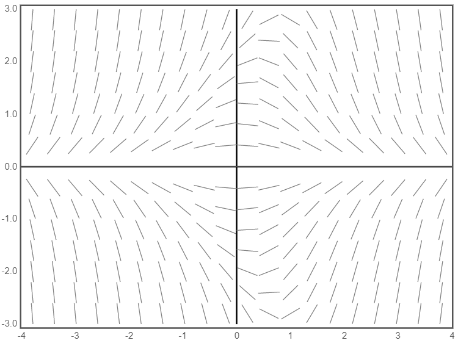

The non-linear initial value problem in question is the following:
$$y^{\prime}=5-3 \sqrt{y}, \quad y(0)=2$$
Our goal is to compute approximate values to the equation at the points$$t=0.5,1,1.5,2.0,2.5$$and plot solutions using:$$a)\: h=0.1 \: b)\: h=0.05\: c)\: h=0.025 \: d)\: h=0.01$$
Part A) h=.1
The Euler's method states that$$y_{n+1}=y_{n}+h \cdot f\left(t_{n}, y_{n}\right),$$where$$t_{n+1}=t_{n}+h$$When h=.1 and t=.5 we have that $$h=\frac{1}{10}, t_{0}=0, y_{0}=2, f(t, y)=5-3 \sqrt{y}$$We have a step size of .1 and we are trying to approximate y(.5) so we will use this method to calculate one
point at each of the five steps
This time we will see twice as many steps as there were in part a because the step size has been reduced by a halfWhen h=.05 and t=.05, we have
$$h=\frac{1}{20}, t_{0}=0, y_{0}=2, f(t, y)=5-3 \sqrt{y}$$
Now use Euler's method to approximate y(.5) after 10 steps
Answer
$$y\left(\frac{1}{2}\right)=2.30166603354356$$
Just like in Part A, we repeat this process for T=1,1.5,2.0,2.5
When different values of h are used for the approximation,
it is clear that the approximations become more similar on each value of t,
implying that with smallervalues of h, that you are getting closer to a single solution
This effect can be seen when the values of the approxximation are plotted and compared at each level of h
Problem 2
In this problem, we are concerned with the following initial value problem:
$$y^{\prime}=-t y+0.1 y^{3}, \quad y(0)=\alpha$$
This differential equation can be represented by the vector field below:

Technologies used for this project
Emathhelp.net was used for performing the computations of each Euler approximation
D3, a javascript datavisualization library, was used to plot the points created by each approximation.
Darryl Nester's Slope Field Generator was used to calculate the slope field of the differntial equation in problem
two.
Bootstrap was used for styling
Lastly, Mathjax was used to render the LaTeX on this webpage.